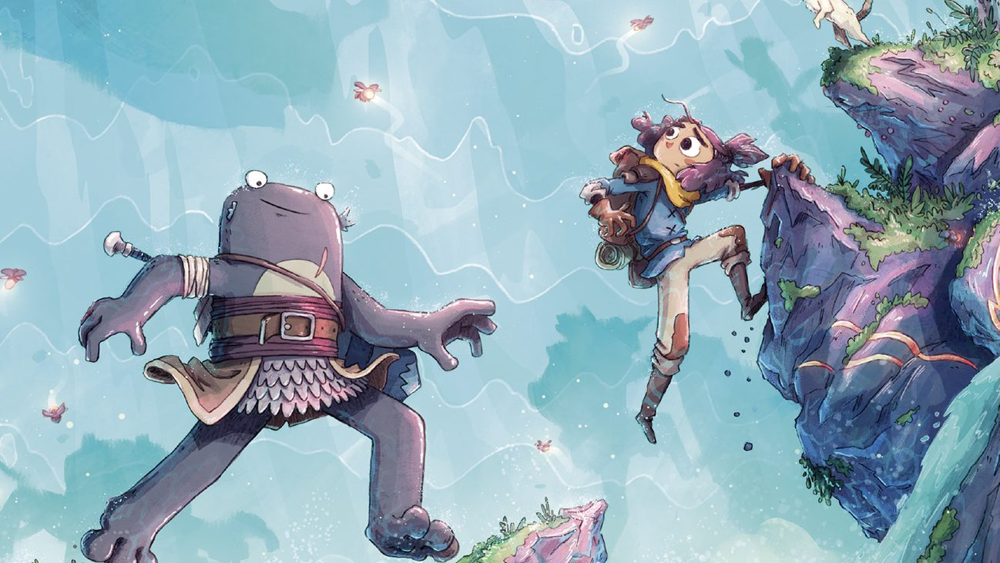
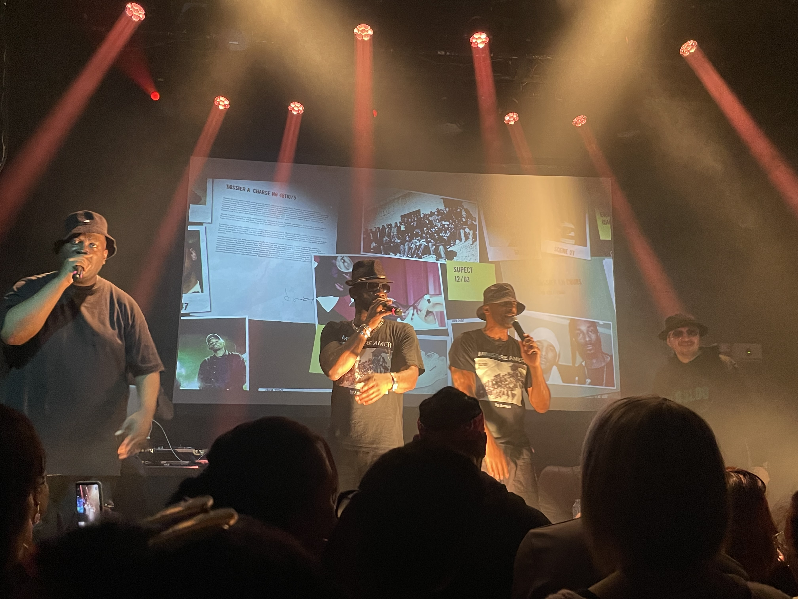
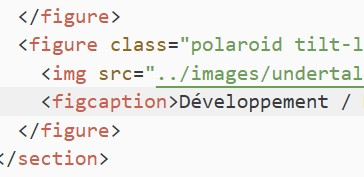

Ce qui me nourrit en ce moment : j’écoute, je lis, je regarde. Ici, je partage des choses qui vivent :
disques, films, lectures, scènes locales et trouvailles indé.
Babel — R.F. Kuangcolonialité, traduction & politique
Friday — Brubakerindé, mystère & adolescence
Adabana — NONmanga, horreur graphique & tranche de vie
Je regarde
Wong Kar-waiville comme personnage
Funny Games US — Michael Hanekehorreur psychologique & 4e mur
Le monde de demain — ARTEtransmission & histoire
Je joue
Tag Team — JDSautobattler & affrontement
Carimara — JVfolkore normand, jeu indé & stressant
Donjons & Chatons — JDRmignon, aventure & partage

Lecture / Romans, BD, Manga

Scènes locales

Développement / HTML, JS & CSS
Pourquoi le rap ?
C'est une passion que je partage avec mon père. Je lui volais ses cd d'IAM et de Doc Gynéco quand j'étais petite. Plus tard, je me suis construite avec mes propres références. J'aime l'engagement, les instrumentales folles et les voix qui les découpent avec rage.
Le monde associatif & moi
C'est un univers important à mes yeux qui permet de faire vivre la culture. J'aime y participer et me sentir utile à une cause qui m'est chère. Je suis dans trois associations différentes liées à la culture, c'est un plaisir de pouvoir travailler avec des personnes passionnées.
Le monde indépendant
J'aime tout ce qui est fait à la main, tout ce qui peut paraître un peu brouillon tant que c'est fait avec amour. J'aime les vêtements indépendants, les artistes sans labels, le cinéma qui doit batailler pour trouver des aides financières...
Carte affective de Clermont-Ferrand
Momie Manga — se perdre entre les étalages
Le Lieu-Dit — sans cesse de nouvelles découvertes
Le Baraka Shop/Bar — des jeux à ne plus savoir à quoi jouer
Les Volcans — ma librairie coup de cœur
Le Grenier des Chimères — partir dans de nouveaux univers